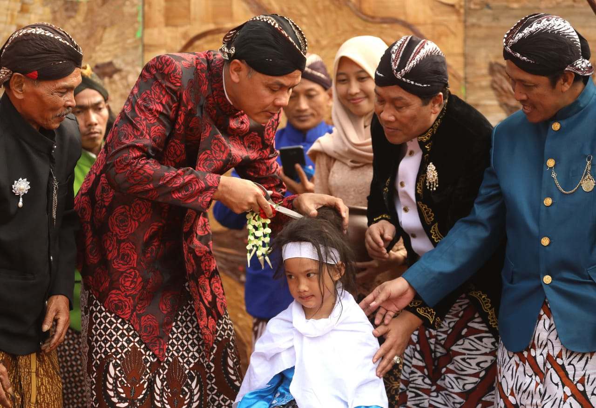
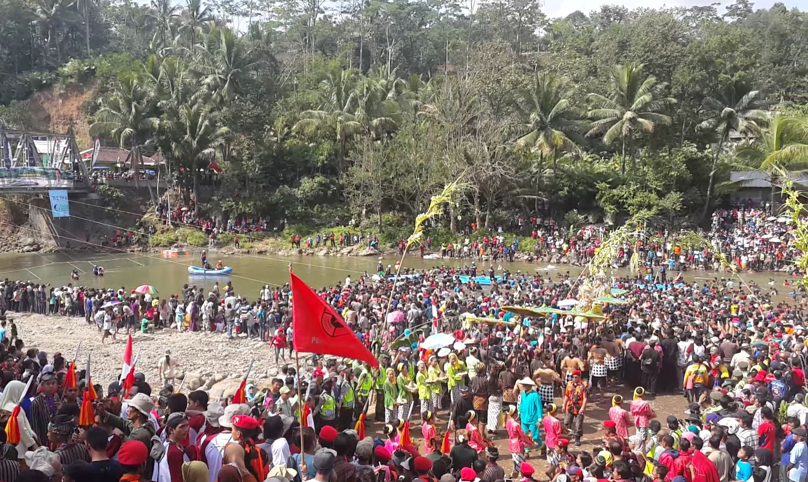

Kabupaten Banjarnegara memiliki beberapa event tahunan dan tradisi yang tiap tahun diadakan. Tiap event/tradisi
yang dilaksanakan pasti mempunyai makna/arti mendalam bagi masyarakat Banjarnegara. Berikut Beberapa event tahunan yang diselenggarakan :
Ruwatan Rambut Gimbal

Pemotongan rambut gimbal dilaksanakan di Dieng setiap tanggal Satu Suro menurut kalender Jawa
Memotong rambut gimbal dipercaya dapat membersihkan atau membebaskan anak-anak berambut gimbal dari sukerta/sesuker (kesialan, kesedihan, atau malapetaka)
Rambut gimbal tumbuh pada anak anak ketika mereka lahir. Hal ini dipercaya bahwa mereka adalah keturunan Kiai Kolodete atau titipan Kanjeng Ratu Kidul (Nyai Roro Kidul)
Mereka juga percaya bahwa rambut gimbal hanya boleh dipotong bila anak yang bersangkutan sudah menghendaki/memintanya dan harus dilakukan melalui ritual ruwat atau ruwatan yang dipimpin tetua adat setempat.
Uniknya, ruwatan ini hanya dapat dilakukan setelah orang tua memenuhi permintaan "apa pun" yang diajukan oleh sang anak. Konon jika pemotongan rambut gimbal tidak dilakukan melalui ritual sakral, rambut gimbal akan kembali tumbuh
dan si anak cenderung sakit-sakitan.
Festival Serayu Banjarnegara

Sungai Serayu sebagai ikon pariwisata alternatif di Kabupaten Banjarnegara. Hal ini untuk menarik kunjungan wisatawan ke Banjarnegara, sekaligus mendorong percepatan industri kreatif. Sungai serayu yang membentang sepanjang kurang
lebih 185 km melintasi lima Kabupaten antara lain Kabupaten Wonosobo, Banjarnegara, Purbalingga, Banyumas dan bermuara di samudera Hindia wilayah Kabupaten Cilacap telah banyak membawa manfaat dan perdaban masyarakatnya.
Sungai Serayu yang telah memberikan manfaat yang besar harus dijagakelestarian hayatinya demi kelangsungan hajat hidup masyarakat sekitarnya, berangkat dari sinilah Pemerintah Kabupaten Banjarnegara menggelar event Festival Serayu
yang menjadi agenda dua tahunan.
Sekda juga menyampaikan tema Festival Serayu Banjarnegara IV yaitu “Serayu, The Spirit Of Banjarnegara” bahwa Sungai serayu yang telah mampu melahirkan peradaban dengan olah cipta, rasa dan karsa akan selalu menjadi semangat
masyarakat Banjarnegara dalam membangun peradaban untuk menuju Banjarnegara yang bermartabat dan sejahtera.
Adapun atraksi dalam event Festival Serayu Banjarnegara IV tidak seperti tahun tahun sebelumnya, namun menghimpun dan mengakomodir kegiatan yang melekat pada OPD terkait, maupun organisasi masyarakat, diantaranya :
Serayu Expo
Event ini akan menyajikan pameran gelar produksi Usaha Kecil dan Menengah,produk pertanian, perikanan, peternakan asli Banjarnegara. Selain kegiatan expo, pengunjung yang datang juga dapat menikmati pentas seni tradisional
Banjarnegara namun juga seni kontemporer seperti halnya Banjarnegara Carnival dan parade band , untuk menyemarakan panggung Serayu Expo Banjarnegara 2019 yang rencananya akan digelar di halaman parkir Stadion Kolopaking,
Parakancanggah, Banjarnegara pada tanggal 22 – 25 Agustus 2019.
Tebar Benih Ikan
Tebar benih salah satu model pemberdayaan masyarakat didalam melakukankonservasi terhadap sungai, upaya-upaya semacam ini juga merupakan pelibatan masyarakat dan pemerintah didalam melestarikan kearifan lokal. Adapun pelaksanaan
tebar benih akan dilaksanakan pada tanggal 22 Agustus bertempat di sepadan sungai Serayu Desa Singamerta, dengan jenis ikan Tawes, Niladan karper dengan jumlah 500 ribu ekor.
Banajarnegara Hijau
Banjarnegara Hijau pada event Festival Serayu Banjarnegara IV adalah merupakanbentuk kepedulian akan pentingnya menanam pohon sebagai upaya untuk menanggulangi kerusakan hutan akan dilaksanakan tanggal 22 Agustus di fokuskan di
komplek perkantoran/Ruang Terbuka Hijau Kelurahan Semampir Kecamatan Banjarnegara.
Event Banjarnegara Hijau yang di wujudkan dengan penanaman pohon sebagai bentuk pembelajaran dan perhatian kepada generasi anak cucu untuk senantiasa merawat bumi pertiwi, juga peningkatan kepedulian, kemampuan dan kemandirian
seluruh elemen masyarakat untuk melakukan penanaman dan pemeliharaan pohon secara berkelanjutan.
Bersih Sungai
Aksi bersih sungai yang akan dilaksanakan tanggal 23 Agustus yang lokasinya disepanjang Kali Blimbing Kel.Semarang Kidul, Kali Palet dan Sungai Serayu Desa Singomerto. Bersih Sungai merupakan bentuk kesadaran masyarakat di sekitar
Kali Serayu khususnya masyarakat Banjarnegara yang telah merasakan betapa besar peran Kali Serayu bahkan telah menjadi nadi hidup dan berkembangnya cipta, rasa dan karsa dalam kemajuan ekonomi, sosial dan budaya yang dapat
dirasakan masyarakat Banjarnegara.
Bersih sungai adalah bentuk perwujudan dari kesadaran dan rasa tanggung jawab masyarakat Banjarnegara untuk nguri-nguri, merawat, melestarikan hayati sungai, sekaligus sebagai ungkapan rasa syukur kepada Tuhan Yang Maha Esa.
Serayu Fox Hunting
Fox Hunting adalah sesuatu kegiatan olah raga yang tidak asing lagi pada kalangan Amatir Radio, namun Serayu Fok Hunting adalah sesuatu yang baru karena dipadu dengan Rafting dan peserta mencari dan melacak sumber signal (Fox)
yang dipancarkan secara periodik dan di letakan di lokasi yang benar benar tersembunyi bahkan benar benar terkubur.